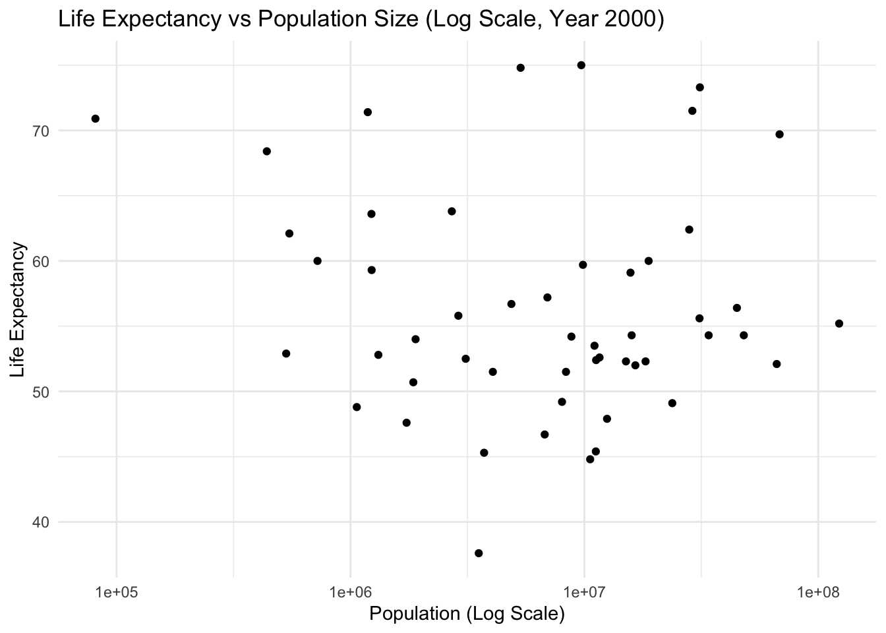
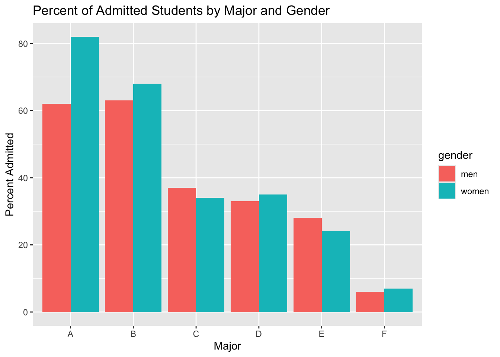
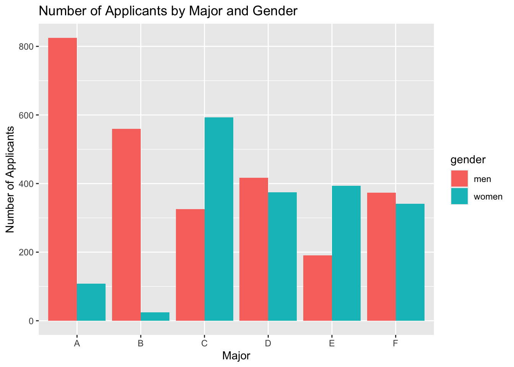
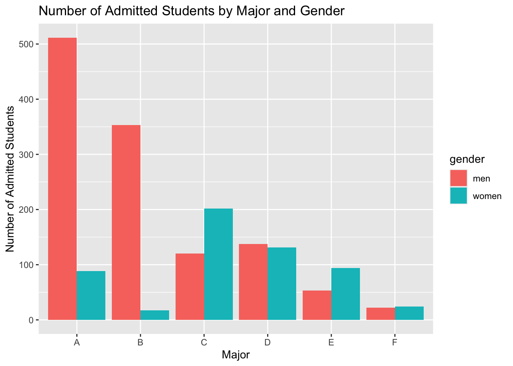

Warning: package 'dslabs' was built under R version 4.3.3
library("dplyr")
Attaching package: 'dplyr'
The following objects are masked from 'package:stats':
filter, lag
The following objects are masked from 'package:base':
intersect, setdiff, setequal, union
library("ggplot2")#help file for gapminder datahelp(gapminder)
starting httpd help server ...
done
#get an overview of data structurestr(gapminder)
'data.frame': 10545 obs. of 9 variables:
$ country : Factor w/ 185 levels "Albania","Algeria",..: 1 2 3 4 5 6 7 8 9 10 ...
$ year : int 1960 1960 1960 1960 1960 1960 1960 1960 1960 1960 ...
$ infant_mortality: num 115.4 148.2 208 NA 59.9 ...
$ life_expectancy : num 62.9 47.5 36 63 65.4 ...
$ fertility : num 6.19 7.65 7.32 4.43 3.11 4.55 4.82 3.45 2.7 5.57 ...
$ population : num 1636054 11124892 5270844 54681 20619075 ...
$ gdp : num NA 1.38e+10 NA NA 1.08e+11 ...
$ continent : Factor w/ 5 levels "Africa","Americas",..: 4 1 1 2 2 3 2 5 4 3 ...
$ region : Factor w/ 22 levels "Australia and New Zealand",..: 19 11 10 2 15 21 2 1 22 21 ...
#get a summary of datasummary(gapminder)
country year infant_mortality life_expectancy
Albania : 57 Min. :1960 Min. : 1.50 Min. :13.20
Algeria : 57 1st Qu.:1974 1st Qu.: 16.00 1st Qu.:57.50
Angola : 57 Median :1988 Median : 41.50 Median :67.54
Antigua and Barbuda: 57 Mean :1988 Mean : 55.31 Mean :64.81
Argentina : 57 3rd Qu.:2002 3rd Qu.: 85.10 3rd Qu.:73.00
Armenia : 57 Max. :2016 Max. :276.90 Max. :83.90
(Other) :10203 NA's :1453
fertility population gdp continent
Min. :0.840 Min. :3.124e+04 Min. :4.040e+07 Africa :2907
1st Qu.:2.200 1st Qu.:1.333e+06 1st Qu.:1.846e+09 Americas:2052
Median :3.750 Median :5.009e+06 Median :7.794e+09 Asia :2679
Mean :4.084 Mean :2.701e+07 Mean :1.480e+11 Europe :2223
3rd Qu.:6.000 3rd Qu.:1.523e+07 3rd Qu.:5.540e+10 Oceania : 684
Max. :9.220 Max. :1.376e+09 Max. :1.174e+13
NA's :187 NA's :185 NA's :2972
region
Western Asia :1026
Eastern Africa : 912
Western Africa : 912
Caribbean : 741
South America : 684
Southern Europe: 684
(Other) :5586
#determine the type of object gapminder isclass(gapminder)
[1] "data.frame"
Processing Data
# Assigning only the African countries to a new object/variable called africadataafricadata <- gapminder %>%filter(continent =="Africa")
#get an overview of africadatastr(africadata)
'data.frame': 2907 obs. of 9 variables:
$ country : Factor w/ 185 levels "Albania","Algeria",..: 2 3 18 22 26 27 29 31 32 33 ...
$ year : int 1960 1960 1960 1960 1960 1960 1960 1960 1960 1960 ...
$ infant_mortality: num 148 208 187 116 161 ...
$ life_expectancy : num 47.5 36 38.3 50.3 35.2 ...
$ fertility : num 7.65 7.32 6.28 6.62 6.29 6.95 5.65 6.89 5.84 6.25 ...
$ population : num 11124892 5270844 2431620 524029 4829291 ...
$ gdp : num 1.38e+10 NA 6.22e+08 1.24e+08 5.97e+08 ...
$ continent : Factor w/ 5 levels "Africa","Americas",..: 1 1 1 1 1 1 1 1 1 1 ...
$ region : Factor w/ 22 levels "Australia and New Zealand",..: 11 10 20 17 20 5 10 20 10 10 ...
# Summary of the new object africadatasummary(africadata)
country year infant_mortality life_expectancy
Algeria : 57 Min. :1960 Min. : 11.40 Min. :13.20
Angola : 57 1st Qu.:1974 1st Qu.: 62.20 1st Qu.:48.23
Benin : 57 Median :1988 Median : 93.40 Median :53.98
Botswana : 57 Mean :1988 Mean : 95.12 Mean :54.38
Burkina Faso: 57 3rd Qu.:2002 3rd Qu.:124.70 3rd Qu.:60.10
Burundi : 57 Max. :2016 Max. :237.40 Max. :77.60
(Other) :2565 NA's :226
fertility population gdp continent
Min. :1.500 Min. : 41538 Min. :4.659e+07 Africa :2907
1st Qu.:5.160 1st Qu.: 1605232 1st Qu.:8.373e+08 Americas: 0
Median :6.160 Median : 5570982 Median :2.448e+09 Asia : 0
Mean :5.851 Mean : 12235961 Mean :9.346e+09 Europe : 0
3rd Qu.:6.860 3rd Qu.: 13888152 3rd Qu.:6.552e+09 Oceania : 0
Max. :8.450 Max. :182201962 Max. :1.935e+11
NA's :51 NA's :51 NA's :637
region
Eastern Africa :912
Western Africa :912
Middle Africa :456
Northern Africa :342
Southern Africa :285
Australia and New Zealand: 0
(Other) : 0
Creating two new objects:
# Creating a new object containing 'infant_mortality' and 'life_expectancy'infant_mortality_life_expectancy <- africadata %>%select(infant_mortality, life_expectancy)# Display the structure of the 'infant_mortality_life_expectancy' objectstr(infant_mortality_life_expectancy)
'data.frame': 2907 obs. of 2 variables:
$ infant_mortality: num 148 208 187 116 161 ...
$ life_expectancy : num 47.5 36 38.3 50.3 35.2 ...
# Display the summary of the 'infant_mortality_life_expectancy' objectsummary(infant_mortality_life_expectancy)
infant_mortality life_expectancy
Min. : 11.40 Min. :13.20
1st Qu.: 62.20 1st Qu.:48.23
Median : 93.40 Median :53.98
Mean : 95.12 Mean :54.38
3rd Qu.:124.70 3rd Qu.:60.10
Max. :237.40 Max. :77.60
NA's :226
# Creating a new object containing 'population' and 'life_expectancy'population_life_expectancy <- africadata %>%select(population, life_expectancy)# Display the structure of the 'population_life_expectancy' objectstr(population_life_expectancy)
'data.frame': 2907 obs. of 2 variables:
$ population : num 11124892 5270844 2431620 524029 4829291 ...
$ life_expectancy: num 47.5 36 38.3 50.3 35.2 ...
# Display the summary of the 'population_life' objectsummary(population_life_expectancy)
population life_expectancy
Min. : 41538 Min. :13.20
1st Qu.: 1605232 1st Qu.:48.23
Median : 5570982 Median :53.98
Mean : 12235961 Mean :54.38
3rd Qu.: 13888152 3rd Qu.:60.10
Max. :182201962 Max. :77.60
NA's :51
Plotting
Using the new variables you created, plot life expectancy as a function of infant mortality and as a function of population size. Make two separate plots. Plot the data as points. For the plot with population size on the x-axis, set the x-axis to a log scale.
# Creating the plot for life expectancy as a function of infant mortalityggplot(data = infant_mortality_life_expectancy, aes(x = infant_mortality, y = life_expectancy)) +geom_point() +labs(title ="Life Expectancy vs Infant Mortality",x ="Infant Mortality",y ="Life Expectancy") +theme_minimal()
Observations: We can see a negative correlation between infant mortality and life expectancy, which makes sense.
# Creating the plot for life expectancy as a function of population size with x-axis log scaleggplot(data = population_life_expectancy, aes(x = population, y = life_expectancy)) +geom_point() +scale_x_log10() +labs(title ="Life Expectancy vs Population Size (Log Scale)",x ="Population (Log Scale)",y ="Life Expectancy") +theme_minimal()
Observations: You can see a positive correlation between population size and life expectancy. The pattern we see in the data is due to the fact that we have different years for individual countries, and that over time these countries increase in population size and also life expectancy.
More data processing
# Looking for years with missing data for infant mortalityyears_missing_infant_mortality <- africadata %>%filter(is.na(infant_mortality)) %>%group_by(year) %>%summarise(missing_count =n())# Display the years with missing data for infant mortalityprint(years_missing_infant_mortality)
# Extracting data for the year 2000africadata_year2000 <- africadata %>%filter(year ==2000)# Display the structure of the new objectstr(africadata_year2000)
'data.frame': 51 obs. of 9 variables:
$ country : Factor w/ 185 levels "Albania","Algeria",..: 2 3 18 22 26 27 29 31 32 33 ...
$ year : int 2000 2000 2000 2000 2000 2000 2000 2000 2000 2000 ...
$ infant_mortality: num 33.9 128.3 89.3 52.4 96.2 ...
$ life_expectancy : num 73.3 52.3 57.2 47.6 52.6 46.7 54.3 68.4 45.3 51.5 ...
$ fertility : num 2.51 6.84 5.98 3.41 6.59 7.06 5.62 3.7 5.45 7.35 ...
$ population : num 31183658 15058638 6949366 1736579 11607944 ...
$ gdp : num 5.48e+10 9.13e+09 2.25e+09 5.63e+09 2.61e+09 ...
$ continent : Factor w/ 5 levels "Africa","Americas",..: 1 1 1 1 1 1 1 1 1 1 ...
$ region : Factor w/ 22 levels "Australia and New Zealand",..: 11 10 20 17 20 5 10 20 10 10 ...
# Display the summary of the new objectsummary(africadata_year2000)
country year infant_mortality life_expectancy
Algeria : 1 Min. :2000 Min. : 12.30 Min. :37.60
Angola : 1 1st Qu.:2000 1st Qu.: 60.80 1st Qu.:51.75
Benin : 1 Median :2000 Median : 80.30 Median :54.30
Botswana : 1 Mean :2000 Mean : 78.93 Mean :56.36
Burkina Faso: 1 3rd Qu.:2000 3rd Qu.:103.30 3rd Qu.:60.00
Burundi : 1 Max. :2000 Max. :143.30 Max. :75.00
(Other) :45
fertility population gdp continent
Min. :1.990 Min. : 81154 Min. :2.019e+08 Africa :51
1st Qu.:4.150 1st Qu.: 2304687 1st Qu.:1.274e+09 Americas: 0
Median :5.550 Median : 8799165 Median :3.238e+09 Asia : 0
Mean :5.156 Mean : 15659800 Mean :1.155e+10 Europe : 0
3rd Qu.:5.960 3rd Qu.: 17391242 3rd Qu.:8.654e+09 Oceania : 0
Max. :7.730 Max. :122876723 Max. :1.329e+11
region
Eastern Africa :16
Western Africa :16
Middle Africa : 8
Northern Africa : 6
Southern Africa : 5
Australia and New Zealand: 0
(Other) : 0
More plotting
# Creating the plot for life expectancy as a function of infant mortality for the year 2000ggplot(data = africadata_year2000, aes(x = infant_mortality, y = life_expectancy)) +geom_point() +labs(title ="Life Expectancy vs Infant Mortality (Year 2000)",x ="Infant Mortality",y ="Life Expectancy") +theme_minimal()
# Create the plot for life expectancy as a function of population size for the year 2000 with x-axis log scaleggplot(data = africadata_year2000, aes(x = population, y = life_expectancy)) +geom_point() +scale_x_log10() +labs(title ="Life Expectancy vs Population Size (Log Scale, Year 2000)",x ="Population (Log Scale)",y ="Life Expectancy") +theme_minimal()

Simple fit model
# Fit a linear model with life expectancy as the outcome and infant mortality as the predictorlm_fit1 <-lm(life_expectancy ~ infant_mortality, data = africadata_year2000)# Display the summary of the first fitsummary(lm_fit1)
Call:
lm(formula = life_expectancy ~ infant_mortality, data = africadata_year2000)
Residuals:
Min 1Q Median 3Q Max
-22.6651 -3.7087 0.9914 4.0408 8.6817
Coefficients:
Estimate Std. Error t value Pr(>|t|)
(Intercept) 71.29331 2.42611 29.386 < 2e-16 ***
infant_mortality -0.18916 0.02869 -6.594 2.83e-08 ***
---
Signif. codes: 0 '***' 0.001 '**' 0.01 '*' 0.05 '.' 0.1 ' ' 1
Residual standard error: 6.221 on 49 degrees of freedom
Multiple R-squared: 0.4701, Adjusted R-squared: 0.4593
F-statistic: 43.48 on 1 and 49 DF, p-value: 2.826e-08
Based off of the p-value of 2.826e-08 this suggests infant_mortality is highly significant. There is a strong negative linear relationship between infant_mortality and life_expectancy in this model. We conclude higher levels of infant_morality are associated with lower life expectancy.
# Fit a linear model with life expectancy as the outcome and population size as the predictor (log scale)lm_fit2 <-lm(life_expectancy ~log(population), data = africadata_year2000)# Display the summary of the second fitsummary(lm_fit2)
Call:
lm(formula = life_expectancy ~ log(population), data = africadata_year2000)
Residuals:
Min 1Q Median 3Q Max
-19.113 -4.809 -1.554 3.907 18.863
Coefficients:
Estimate Std. Error t value Pr(>|t|)
(Intercept) 65.3243 12.5203 5.217 3.65e-06 ***
log(population) -0.5711 0.7943 -0.719 0.476
---
Signif. codes: 0 '***' 0.001 '**' 0.01 '*' 0.05 '.' 0.1 ' ' 1
Residual standard error: 8.502 on 49 degrees of freedom
Multiple R-squared: 0.01044, Adjusted R-squared: -0.009755
F-statistic: 0.517 on 1 and 49 DF, p-value: 0.4755
Based off of the p-value of 0.4755 this suggests there is no significant linear relationship between log(population) and life_expectancy in this model. We conclude log(population) does not explain much of the variation in life_expectancy.
This section is contributed by RINU THOMAS
Explore the dataset:
#look at help file for admissions datahelp(admissions)
major gender admitted applicants
Length:12 Length:12 Min. : 6.00 Min. : 25.0
Class :character Class :character 1st Qu.:27.00 1st Qu.:291.5
Mode :character Mode :character Median :34.50 Median :374.0
Mean :39.92 Mean :377.2
3rd Qu.:62.25 3rd Qu.:452.8
Max. :82.00 Max. :825.0
#determine the type of object gapminder isclass(admissions)
[1] "data.frame"
Checking to see if we need to clean the dataset:
# Check for missing valuesmissing_values <-sum(is.na(admissions))print(paste("Number of missing values:", missing_values))
[1] major gender admitted applicants
<0 rows> (or 0-length row.names)
Exploratory figures;
# Bar plot of admitted vs. majorggplot(admissions, aes(x = major, y = admitted, fill = gender)) +geom_bar(stat ="identity", position ="dodge") +labs(title ="Percent of Admitted Students by Major and Gender", x ="Major", y ="Percent Admitted")

# Bar plot of applicants vs. majorggplot(admissions, aes(x = major, y = applicants, fill = gender)) +geom_bar(stat ="identity", position ="dodge") +labs(title ="Number of Applicants by Major and Gender", x ="Major", y ="Number of Applicants")

# Admission rate plotggplot(admissions, aes(x = major, y = admitted /100* applicants, fill = gender)) +geom_bar(stat ="identity", position ="dodge") +labs(title ="Number of Admitted Students by Major and Gender", x ="Major", y ="Number of Admitted Students")

Simple statistical model(s)
# Convert categorical variables to factorsadmissions$major <-as.factor(admissions$major)admissions$gender <-as.factor(admissions$gender)
# Fit linear regression modelmodel <-lm(admitted ~ major + gender, data = admissions)summary(model)
The linear regression model shows that the major has a significant impact on the percentage of students admitted, with majors C, D, E, and F having significantly lower admission rates compared to major A. Gender does not appear to have a significant impact on the admission rate in this model.